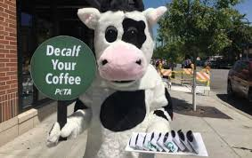

I used to play piano by ear, but now I just play it by mom-ory.
When I asked my mom if she could make me a sandwich, she said, "Poof! You're a sandwich!"
Why do parents make terrible detectives? Because we always find the evidence after the crime has been committed.
My kids call it "helicopter parenting," but I prefer to think of it as "surveillance with love."
What do you call a mother cow that just gave birth? De-calf-inated.
Check out my Family jokes here, Return Home page.
